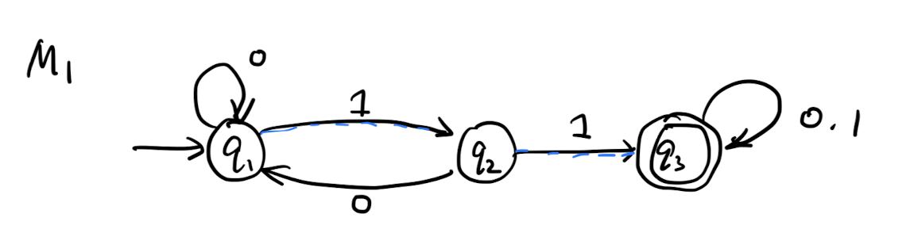
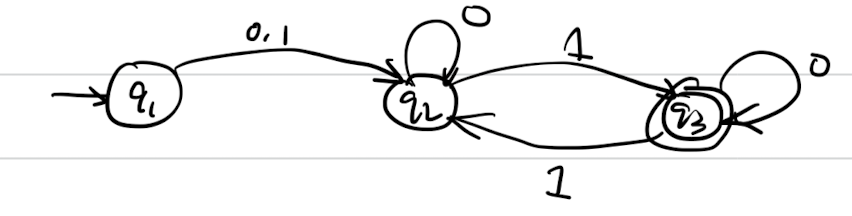
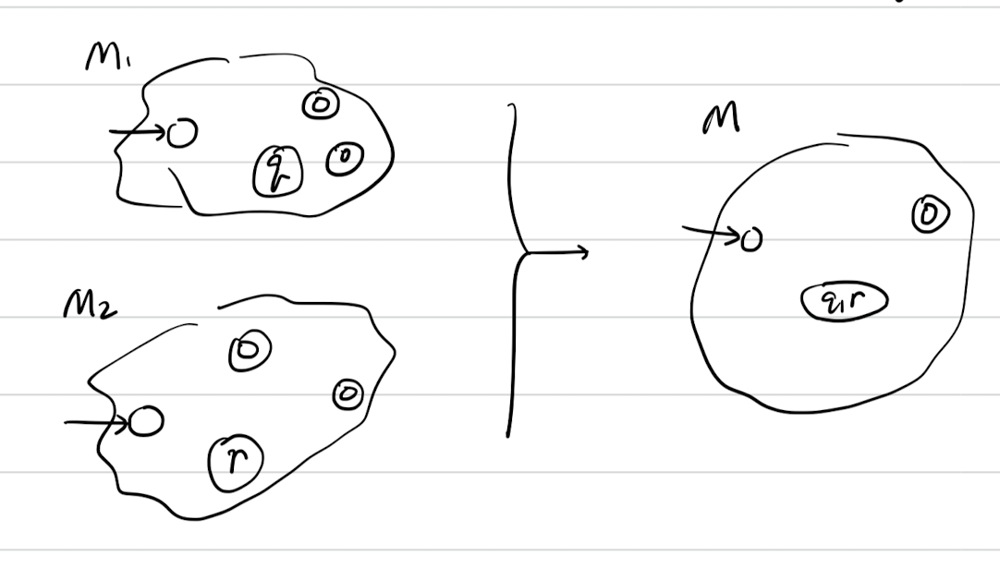
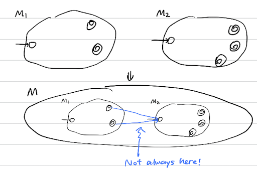
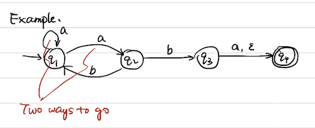
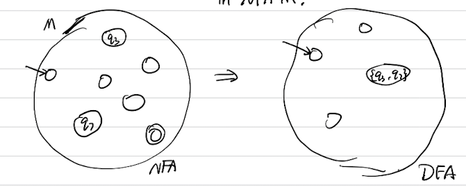
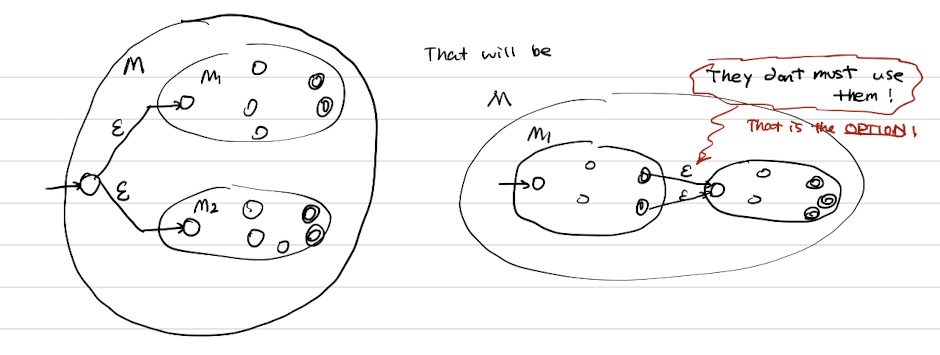
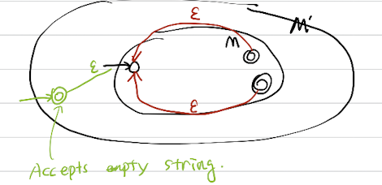

2. Finite Automata and Regex expression
Example of FSM

This is a FSM with states \(q_1, q_2, q_3\), transitions is shown as the edges, start state is the arrow pointing towards it, and the accepted state is the state that has double circle on it.
- Input: finite string
- Output: Accept or Reject
- Computation: Begin at start, read input, follow transition graph
- Accept if reach state accept, Reject ow.
Finite Automata
Def 1 (Finite Automaton). A finite automaton is a 5-tuple \(\left(Q, \Sigma, \delta, q_0, F\right)\), where
- \(Q\) is a finite set called the states,
- \(\Sigma\) is a finite set called the alphabet,
- \(\delta: Q \times \Sigma \longrightarrow Q\) is the transition function, \({ }^1\)
- \(q_0 \in Q\) is the start state, and
- \(F \subseteq Q\) is the set of accept states. \({ }^2\)
Strings and languages:
- a string is a finite seq of symbols in \(\sigma\)
- a language is a set of strings (finite or infinite)
Empty string \(\varepsilon\) is the string of length 0 The empty language \(\varnothing\) is the set of no strings
Def 2 (Accepts). \(M\) accepts string \(w=w_1 w_2 \ldots w_n\) each \(w_i \in \sigma\), if there is a sequence of states \(r_0, r_1, \cdots, r_n \in Q\) where
1) \(r_0=a_0\) 2) \(r_i=\delta\left(r_{i-1}, w_i\right)\) for \(1 \leqslant i \leqslant n\) 3) \(r_n \in F\).
Def 3 (Regular language). A langrage is regular if some finite automaton recognizes it.
Note: Some equivalent ways of saying ``recognizing language''
- \(L(M)=\{w| M \text { accepts }w\}\);
- \(L(M)\) is the language of \(M\);
- \(M\) recognizes \(L(M)\).
Example 3-1. Let \(B=\{\omega \mid \omega\) has even number of \(1 s\}\). \(B\) is regular.

Example 3-2. Let \(C=\{\omega \mid \omega\) has equal numbers of \(O s\) and \(1 s\}\), \(C\) is not regular.
Regular language
Def 4 (Regular operations). Let \(A, B\) be languages,
- Union \(A \cup B=\{\omega \mid \omega \in A \vee \omega \in B\}\)
- Concentration \(A \circ B=\{x y \mid x \in A \wedge y \in B\}\)
- Star. \(A^*=\left\{x_1 \cdots x_k \mid\right.\) each \(x_i \in A\) for \(\left.k>0\right\}\). and \(\varepsilon \in A^*\) always.
Example 4-1. \(A=\{\operatorname{good}\), bad \(\}, B=\{\) boy , girl \(\}\). \(A^*\) is going to be infinite language if \(A \neq \varnothing\).
Regular Expression revisited.
- Built from \(\Sigma\), members \(\Sigma, \varnothing, \varepsilon\) [Atomic]
- By using \(\cup, \circ, * \quad\) [Composite]
Example 4-2.
- \((O \cup 1)^*=\Sigma^*\) gives all strings over \(\sum\)
- \(\Sigma^* 1\) gives all strings ends with 1 .
- \(\Sigma^* 11 \Sigma^*=\) all strings contain - \(1 1=L\left(M_1\right)\).
We shall show Finite Automata(FA) \(\Leftrightarrow\) Regex .
Th 1. (Closure for Regex Language) If \(A_1, A_2\) are regular language, so is \(A_1 \cup A_2\).

Proof. Let \(M_1=\left(Q_1, \Sigma, \delta_1, q, F_1\right)\) recognize \(A_1\), \(M_2=\left(Q_2, \Sigma, \delta_2, q_2, F_2\right)\) recognizes \(A_2\). Construct \(M=\left(Q, \Sigma, \delta, q_0 . F\right)\) recognize \(A_1 \cup A_2\) M should accept input \(w\) if either \(M_1\) or \(M_2\) accept \(M\).
We construct
- \(Q=Q_1\times Q_2\)
- \(q_0=(q_1, q_2)\)
- \(\delta((q,r),a)=(\delta_1(q,a),\delta_2(r,a))\)
- \(F=\left(F_1 \times Q_2\right) U\left(Q_1 \times F_2\right)\).
Th 2. (Closed under \(\circ\)) If \(A_1, A_2\) are regular language, so is \(A_1 \circ A_2\).
Primary thought: \(M\) should accept w if \(w=x y\) where \(M_1 \operatorname{acc} x\) and \(M_2\) acc \(y\).

But we dont know where to split \(x\) and \(y\)!
We will prove this statement later after introducing Non-deterministic finite automata.
Non-deterministic Finite Automata
Example.

- Multiple paths possible
- \(\varepsilon\)-transition is a "free" move without reading input
- Accept if some part leads to accept.
This do not correspond to the real machine, but helpful mathematically.
Def 5 (Nondeterministic finite automata). A nondeterministic finite automate (NFA) is a 5 -tuple \((Q, \Sigma, \delta, q_0, F)\). The definition for them is the same except
Th 3 (NFA recognizes regex language). If NFA recognizes \(A\), then \(A\) is regular.
Proof idea: DEA \(M^{\prime}\) keeps track of the subset of possible states in NFA \(M\).

Construction $$ \begin{aligned} Q^{\prime} & =\mathcal P(Q) \ \delta^{\prime} & =(\underbrace{R}_{R \in Q^{\prime}}, a) \ & =\left{q \mid q \in \delta(r, a) \text { for sone } q^{\prime}\right} \ q_0^{\prime} & =\left{q_0\right} . \ F^{\prime} & =\left{R \in Q^{\prime} \mid R \cap F\right} . \end{aligned} $$
We shall now look at Closed under \(\circ\) theorem's proof:
Gives DFAs \(M_1, M_2\), recognizing \(A_1\) and \(A_2\) Construct \(M\) recognizing \(A_1 \cup A_2\).

Th 4 (Closed under star). If \(A\) is a regular language, so is \(A^*\).
Proof idea: Given DFA \(M\) recognizing \(A\) construct NFA \(M^{\prime}\) recognizing \(A^*\).

\(M^{\prime}\) should accept \(w\) if \(w=x_1 x_2 \cdots\). \(k \geq 0 . M\) accepts \(x_i\) each.
Regular language to NFA
Th 5. If \(R\) is a regular exp and \(A=L(R)\), then \(A\) is regular.
Proof. Convert \(R\) to equivalent NFA \(M\).
- If \(a\) is atomic: $$ \begin{aligned} R=a & \text { for } a \in \Sigma & \Leftrightarrow &~ \rightarrow \circ \rightarrow \boxed\circ \ R=\varepsilon & & \Leftrightarrow &~\rightarrow \boxed\circ \ R=\varnothing & & \Leftrightarrow &~\rightarrow \circ \end{aligned} $$
- If \(a\) is composite, Use closure constructions.